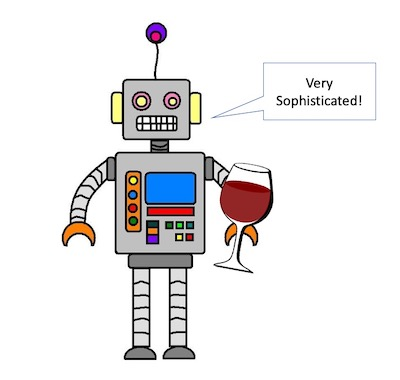

Modeling wine reviews with a Markov chain of bigrams
Author
Jacob Rosenthal
Published
October 15, 2020

Robot Sommelier
“Rich Tannins.”
“Peppery finish.”
“Afternotes of loamy soil.”
Who writes wine descriptions, anyways? Wine reviews are practically a genre of their own, with a specific vocabulary and its own set of phrases and that I basically never see in any other context.
In this projet we will make a very simple model that randomly generates new wine reviews. I will walk through each step in designing the model and implementing it!
Defining the model
The model we will be using is a very simple Markov chain model. First, we model each wine review as a sequence of word pairs (i.e. bigrams). Then, we create new reviews by chaining together word pairs using a single rule which is used to generate the next word given the preceding word as input. We simply look through a dataset of real wine reviews and find all occurences of the preceding word, then randomly pick one of them and use whatever word followed it in that context.
Here’s the algorithm for generating the n-th word \(w_n\) given the preceding word \(w_{n-1}\) and a dataset \(D\):
Algorithm \(g(w_n | w_{n-1}, D)\):
Find \(O = \{o_1, o_2, \dots, o_m\}\), the set of all \(m\) occurences of \(w_{n-1}\) in \(D\)
Randomly choose an occurence \(o_k \in O\)
Return the word immediately following \(o_k\) in its original context
Because the generation of each word depends only on the previous word, it is completely independent of all the other preceding words in the description so far. In other words, \(P(w_n | w_{n-1}) = P(w_n | w_{n-1}, w_{n-2}, \dots, w_{1})\). This means that our model is a Markovian process. The transition probabilities between bigrams are empirically determined from our corpus.
Of course this is probably not going to be a great model, since it does not consider any of the context besides the immediately preceding word. But it can still give surprisingly good results, as it lets us capture many of the common two-word phrases which define the genre of wine reviews.
Now let’s take a look at implementing this model.
Loading the Data
Luckily, someone has already gone through the effort of creating a dataset of more than 280,000 real wine descriptions! These were scraped from Wine Enthusiast and the dataset is hosted on Kaggle. The data have been downloaded and placed in the ./data folder. The data are split into two files.
import pandas as pdimport numpy as npfrom collections import Counter, defaultdictimport spacy# first load datadata1 = pd.read_csv('./data/winemag-data-130k-v2.csv')data2 = pd.read_csv('./data/winemag-data_first150k.csv')print(data1.shape)print(data2.shape)
(129971, 14)
(150930, 11)
Let’s take a quick look at the datasets:
data1.head(1)
Unnamed: 0
country
description
designation
points
price
province
region_1
region_2
taster_name
taster_twitter_handle
title
variety
winery
0
0
Italy
Aromas include tropical fruit, broom, brimston...
Vulkà Bianco
87
NaN
Sicily & Sardinia
Etna
NaN
Kerin O’Keefe
@kerinokeefe
Nicosia 2013 Vulkà Bianco (Etna)
White Blend
Nicosia
data2.head(1)
Unnamed: 0
country
description
designation
points
price
province
region_1
region_2
variety
winery
0
0
US
This tremendous 100% varietal wine hails from ...
Martha's Vineyard
96
235.0
California
Napa Valley
Napa
Cabernet Sauvignon
Heitz
For this model, we are only interested in the descriptions, so let’s pull those out and combine all the descriptions from both files:
descriptions =list(data1["description"].values) +list(data2["description"].values)# strip any leading or trailing whitespace if anydescriptions = [string.strip() for string in descriptions]print("Total number of descriptions: ", len(descriptions))
Total number of descriptions: 280901
Let’s take a look at a few examples:
for item in np.random.choice(descriptions, size =3): print(item, "\n")
Sweet mocha and coffee notes overwhelm the bouquet of this Pinot, with red raspberry and cherry skin notes providing support. Lively acidity and a satiny texture fill the mouth, while white pepper spice lingers on the finish.
Hints of nail polish and flavors of hard citrus candy, with grainy honey and sugar. This is not a shy Riesling; it's intense, rich with peach and apricot, and pushed just a bit too far for some tastes.
Produced by the owners of Châteauneuf-du-Pape estate Château Mont-Redon, this is a full and fruity wine. It has a good balance between acidity and red berry fruits that give a rich character. Packed with flavor, it's ready to drink.
Preprocessing the Data
Now we need to process the data to get ready for our model. But what is the best way to do this?
Data Structure
First we need to choose the data structure we will use. At its heart, our model relies on consectutive word pairs. So we could parse our dataset into a list of all word pairs, and then generate by filtering the list and randomly choosing.
However, we know that many of the word pairs will appear quite frequently! If we just parse into a list of all word pairs, we might have 100 identical entries on our list for “rich tannins.” We can instead count how times a word pair occurs, and keep track of the counts of all the tokens. When it comes time to sample the next word, we can simply use probabilities proportional to the counts instead of uniformly sampling! This will let us generate words without having to process the entire set of all the token pairs in our entire dataset.
In python, we will implement this as a dictionary, where each key is a token. I’ll call this our vocabulary. The corresponding values are dictionaries themselves containing counts of all the tokens that followed.
Tokenizing
Each descriptions in the dataset is a single string. We need to divide the descriptions into their individual words, so we can count the word pairs. This process is called tokenization, where we divide the input into a set of tokens.
Rather than doing this from scratch, we will use a pre-made tokenizer from Spacy. The advantage of this is that the pre-made tokenizer is smart enough to handle things like puncuation.
%%time# use pre-made tokenizer from spacynlp = spacy.load("en_core_web_sm")# a dictionary will be used to hold the vocabulary# each item in the vocabulary will have a counter to track which words follow itpair_freq = defaultdict(Counter)# make a special end of sentence tokenend_token ="END_TOKEN"# process all the descriptions# disabling unneeded components in the pipeline to speed it upfor description in nlp.pipe(descriptions, disable=["tagger", "parser", "ner"]):# for each token, update the counts of the following wordfor token in description:# get the following tokentry: neighbor = token.nbor().textexceptIndexError: neighbor = end_token pair_freq[token.text][neighbor] +=1vocab =list(pair_freq.keys())print("Total number of words:", len(vocab))
Total number of words: 45481
CPU times: user 1min 25s, sys: 404 ms, total: 1min 26s
Wall time: 1min 27s
import jsonwithopen('robosomm_data.json', 'w') as fp: json.dump(pair_freq, fp)
import picklewithopen('robosomm_data.pickle', 'wb') as handle: pickle.dump(pair_freq, handle)
Our vocabulary consists of more than 45,000 unique words!
Let’s look at some random examples of word pairs:
for token1 in np.random.choice(vocab, size =10): all_following =list(pair_freq[token1].keys()) token2 = np.random.choice(all_following)print(token1, token2)
dottings of
ripper ,
colada ,
assemblng quite
blackberry clusters
gallo salsa
Barefoot sparkling
sections that
Carpoli has
sauvage wildness
Implementing the model
First, we implement our function to generate the next word. Because we preprocessed the data in a smart way, this is actually very simple!
# functions to generate textdef gen_next_word(word):"""Generate the next word given the preceding word"""# Get the counter for the following words all_following = pair_freq[word]# Get the words themselves, and corresponding counts following_words =list(all_following.keys()) counts = np.array(list(all_following.values()))# Randomly sample the next word weights = counts / np.sum(counts)return np.random.choice(following_words, p = weights)
Now to generate a description from scratch, we just use a loop to continuously generate the next word! The loop stops when we either hit the special end-os-sentence token, or when we reach a maximum description length.
def generate_description(prompt): """Generate a wine descriptions given a prompt""" prompt_doc = nlp(prompt)# set up the while loop current_text = prompt last_word = prompt_doc[-1].text not_end_token =True max_desc_length =100 c =0while not_end_token and c < max_desc_length: next_word = gen_next_word(last_word)if next_word == end_token: not_end_token =Falseelse: current_text +=" "+next_word last_word = next_word c +=1return current_text
Trying it out!
Now we can generate our own wine reviews! Let’s look at a few examples:
generate_description("A fruity merlot, with a smoky")
"A fruity merlot, with a smoky oak . The black tea and toasty oak , apricot , allied to the next six years of lively , it 's an apéritif wine very tight and soft , it too extracted Malbec . Best now . Now–2014 ."
generate_description("A full bodied cabernet")
"A full bodied cabernet sauvignon . It has honey , it 's a delicious , and berry fruits and rich future ."
generate_description("Spicy")
'Spicy cinnamon , it would pair with hearty mouthful of Pinot they are tougher , currants , cherries lead to the finish .'
generate_description("This wine is terrible")
'This wine is terrible flaws here . In the black fruit . It feels tight tannins , luscious and fresh and sophisticated notes , this wine offers aromas emerge with ample cherry flavors . The finish is very impressive is a bit of cherry , which offers a shame to soften . In the ripe and Mourvèdre , with suggesting wet cement , juicy and bitter , this 100 % Syrah with just yearning to say that will put in French oak flavors are certified - dimensional in the perfumes , packed with mixed with mature fruit and minerality and a final indication of'
Conclusion
There we have it! A (very rudimentary) text generation model!
The descriptions certainly aren’t great - I don’t think any human would be fooled! However, given how rudimentary our model is, the results are surprisingly good. The sentences are mostly coherent, and they also do well at capturing the vocabulary and phrases distinctive of the wine description genre! This shows how even the simplest model can “learn” features distinctive of the dataset it was trained on.
Of course we could improve on this model by using 3-grams or 4-grams instead of bigrams, which would let us capture more context. Or, we could use NLP methods that are much better than Markov chains! Recurrent neural networks, transformers, etc… Maybe we’ll look at those in a future notebook.